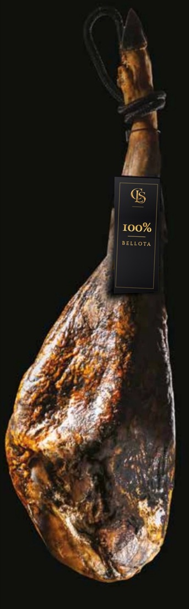
Sigillo nero
Bellota 100% ibérico
Maiale di razza iberica pura, ingrassato a ghiande nella dehesa durante la montanera.
Razza 100%Ghianda
Salumi ibérici da Jabugo
I nostri salumi arrivano da Jabugo, nella Sierra de Aracena (Huelva), uno dei luoghi simbolo dell'ibérico, da una filiera che segue il maiale dall'allevamento alla stagionatura.
In Spagna la normativa sull'ibérico (Real Decreto 4/2014) classifica ogni prosciutto e spalla con un sigillo colorato, in base alla purezza della razza e all'alimentazione del maiale.
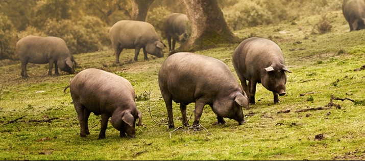
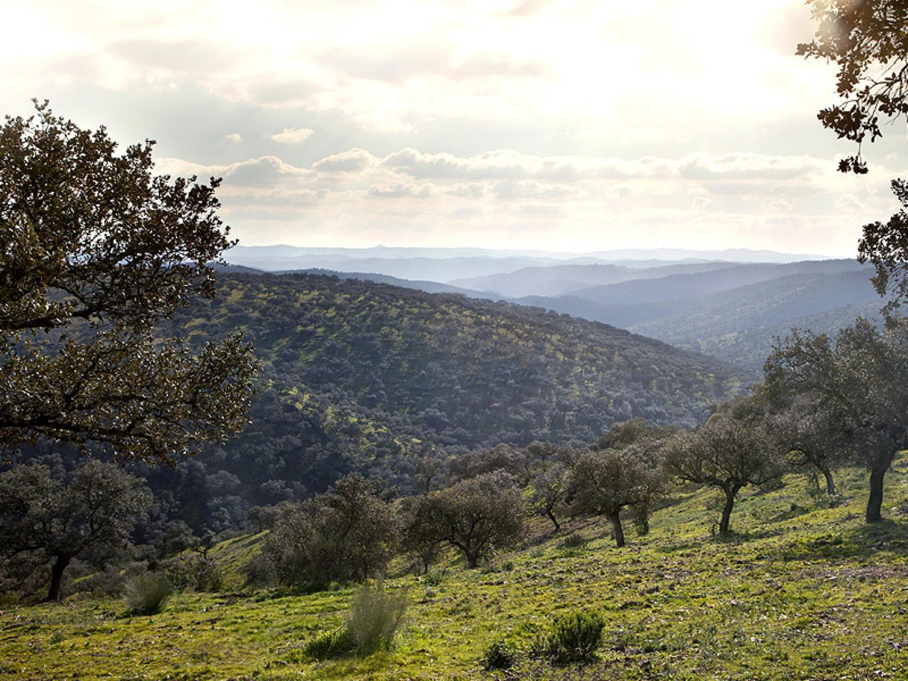
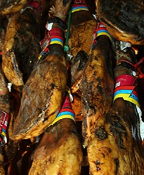

Maiale di razza iberica pura, ingrassato a ghiande nella dehesa durante la montanera.
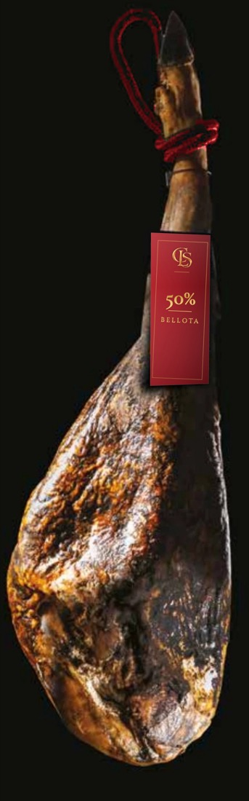
Incrocio con almeno il 50% di razza iberica, ingrassato a ghiande in libertà.
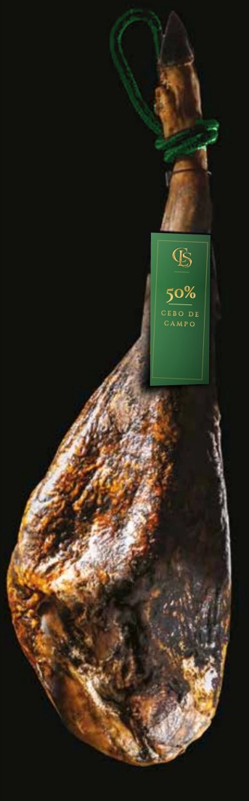
Allevato all'aperto, alimentato con pascolo e mangimi a base di cereali e legumi.
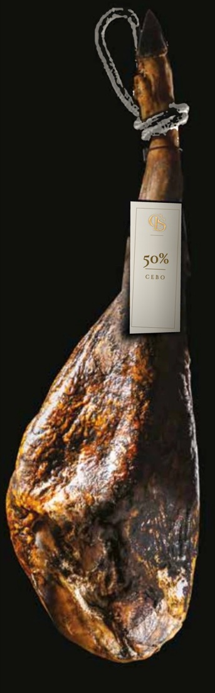
Allevato in stalla e alimentato con mangimi. Ottimo rapporto qualità-prezzo.
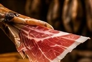
Prosciutto e spalla ibérici, dal cebo al bellota 100% ibérico. Interi con osso, disossati o affettati.
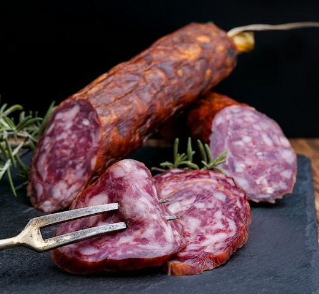
Chorizo, salchichón, lomo e gli altri insaccati di maiale ibérico, interi o affettati.
Anche in assortimento
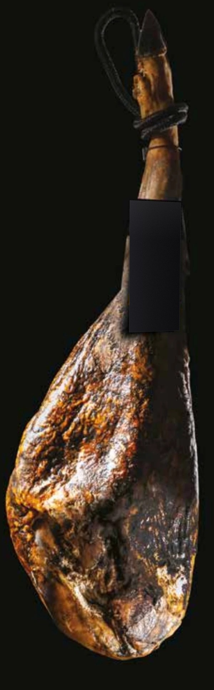
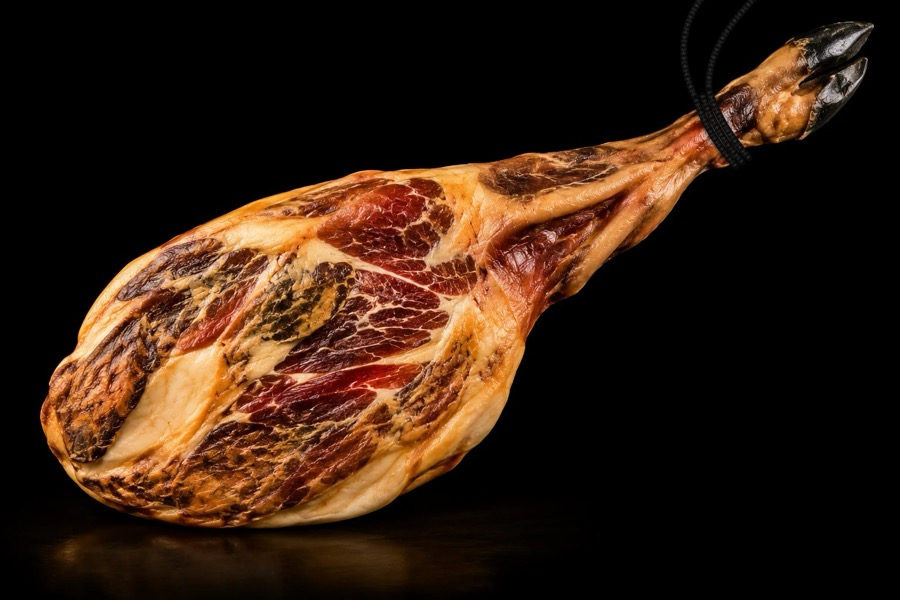
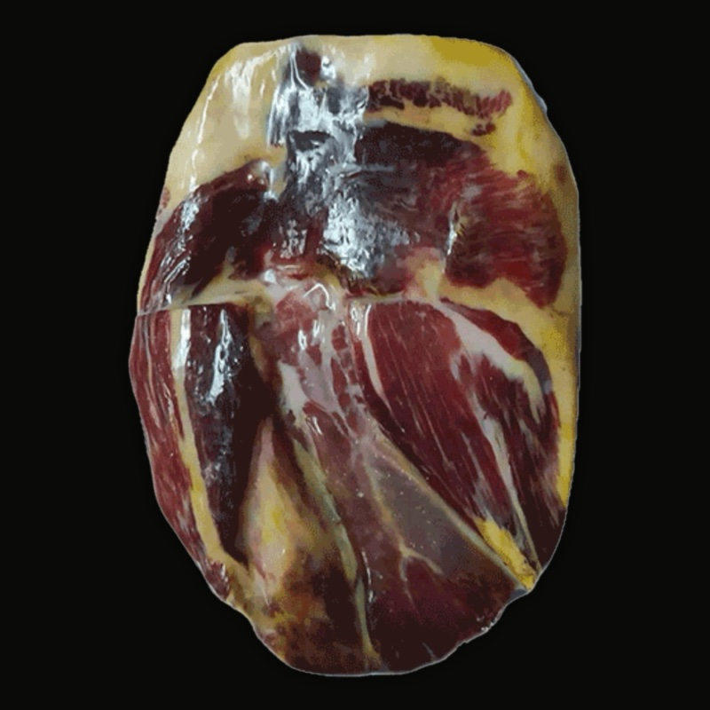
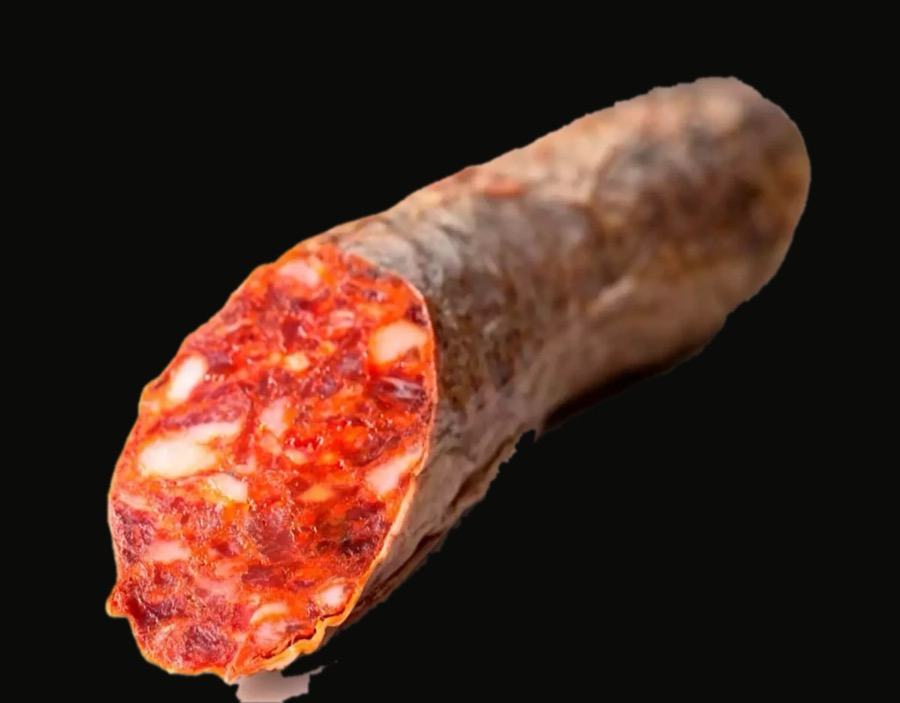
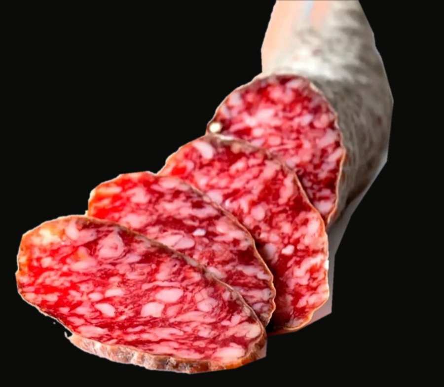
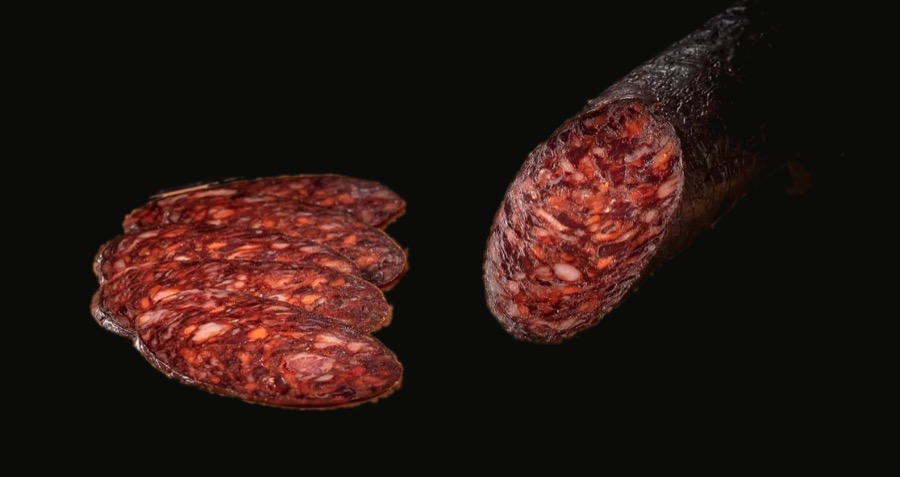
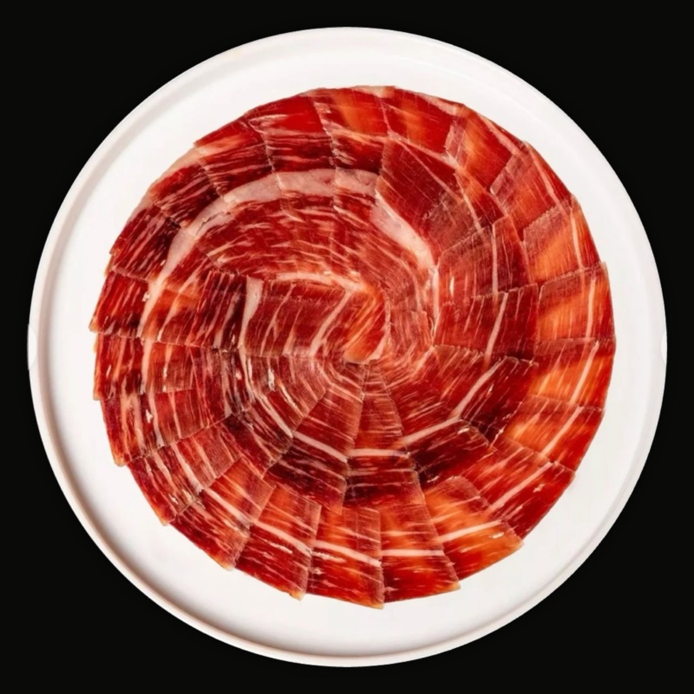
Solo operatori professionali